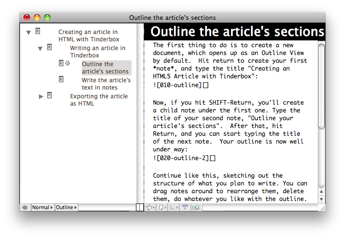
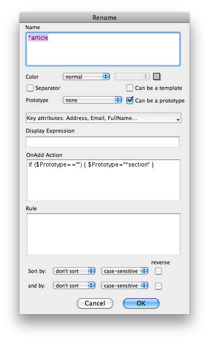

Creating an article in HTML with Tinderbox
For almost 10 years now, I've had an on-again / off-again relationship with Tinderbox from Eastgate Systems Inc. I've long used outlines and mindmaps to get thoughts and out of my head and onto paper and screens. So, it's pretty inevitable that I'd eventually be attracted to Tinderbox.
But, the thing is, Tinderbox is a complex technology. Note that I didn't say application or utility: Tinderbox isn't a sleek little productivity app you can pick up for $20 or less—and if you approach it from that mindset both the price and user interface will baffle you.
No, Tinderbox is more like a hyperdimensional spreadsheet or a personal CouchDB. Tinderbox is a platform for capturing your thoughts and wrapping them in a scaffold of machine intelligence. The learning curve follows a crazy-steep Sigmoid function. But, the complexity is there for a reason. This isn't a commuter vehicle; this is a fully-articulated piece of construction-site heavy machinery for your brain.
And, as such, you'll probably require a bit of training before you can get productive. So, apropos of my notion of writing for myself, I thought I might throw together a bit of a tutorial on some things in Tinderbox that have all finally come together for me. If I do this right, it'll be a tutorial I wish I'd had a few years ago.
Writing an article in Tinderbox
This is going to be a tutorial about writing an article with Tinderbox for publication as HTML. In fact, this tutorial is an article written using Tinderbox, so it'll serve as its own example. You're reading the HTML export now, and the complete Tinderbox source document can be found here on GitHub. I'll be building things up incrementally throughout this tutorial, tracking the actual process I went through along the way. Following along with the final product may help you—though building your own may help more.
Outline the article's sections
The first thing to do is to create a new document, which opens up as an Outline View by default. Hit return to create your first note, and type the title "Creating an HTML5 Article with Tinderbox":

Now, if you hit SHIFT-Return, you'll create a child note under the first one. Type the title of your second note, "Outline your article's sections". After that, hit Return, and you can start typing the title of the next note. Your outline is now well under way:
Continue like this, sketching out the structure of what you plan to write. You can drag notes around to rearrange them, delete them, do whatever you like with the outline. Note that Tinderbox offers many further tools for capturing and visualizing your thoughts, but we'll stick with the Outline View for now.
Write the article's text in notes
Once you've got an outline for your article in good shape, it's time to start writing the text of the article itself. Really, you can bounce back and forth between outlining and writing prose—Tinderbox doesn't impose a process—but this is a good time to introduce the latter.
In Tinderbox, notes have many attributes. So far, you've seen the $Name attribute in use as the titles of outline nodes. Well, notes can also contain body text. To see what I mean, click on a note to select it—say the root note of your outline—and hit the spacebar. Here's what the body text looks like for the root node of this tutorial:

You can click on any note in the outline and call up a body text editor with the spacebar. By using this editor, you can work on writing the actual content of your article.
But, clicking on each note and hitting the spacebar can get tedious after awhile. Tinderbox offers another View to make editing the text easier across a complex document. Select View > New Explorer View from the menu, and you'll see something like this window:

The Explorer View is a split window combining both a note text editor with another view type. By default, this will show your outline. Here, you can click on the title of a note, and its text appears in the editor. This should make it easier to jump back and forth between sections, and even perform some tweaks to the outline itself.
Exporting the article as HTML
Now, say you're done composing the content of your article. You've gotten the outline structured to your satisfaction, and you've written everything you want for a first draft. At this point, you'd like to get the thing exported as HTML to publish somewhere on the web.
This is where the more advanced features of Tinderbox's HTML export templates come into play.
Create an "Internals" note to contain non-exportable utility notes
Now, things start to get interesting. First, in order to keep things clean, you're going to create a new note to contain the export machinery you'll soon need.
Select the root note of your article. But, rather than just hitting return to create a new outline item, hit Cmd-K to summon the full Create Note dialog window:

In this dialog, you can control quite a number of different attributes and options. But, ignore most of them for now. Just type the name "Internals" and, for good measure, check the "Separator" box. This will create a new note like the following:

Notice I got a little ahead of things in the screenshot above: The next thing I want you to dois add two notes as children under "Internals", respectively named "Prototypes" and "Templates".
Use prototypes to augment notes with common details
Spreadsheets and relational databases center around rows and columns. Similarly, Tinderbox centers around notes and attributes. For the most part, the attributes of your notes have been mostly invisible, since you've been dealing mainly with names and body text. But, you're about to get a bit more acquainted with what's going on under the hood of your notes.
In Tinderbox, you can create a special kind of note called a Prototype. A prototype, as its name suggests, can serve as the basis for many other notes. You can create a prototype and assign values to some of its attributes, and those values will be used as defaults for other notes created as instances of that prototype. And, if you change an attribute on a prototype, all notes using that prototype will in turn inherit the changes.
Create a Prototype named *article
So, to see what all the above means, create a child note named "*article" under the new Prototypes note in Internals. Why *article? No reason, really. Name it whatever you like, but I prefer to use odd looking names for notes that have special purposes.
Now, either right-click and pick Rename from the menu, or hit the Enter key. (That's Enter, mind you, not Return.) This will summon up the note details dialog, not unlike the one you saw to create the Internals note earlier:
In this dialog, check the box next to "Can be a prototype" and click Ok. This note is now a Prototype. Now, click to select the root note of your article and summon the note details dialog with either the right-click menu or the Enter key:

Notice the drop down selection for Prototype. In this list, you should see your new prototype *article appear—select it and hit Ok. Now, your root article note is an instance of the prototype *article. To demonstrate what this means, I'll introduce another interesting feature of Tinderbox outlines, called badges.
Just to the left of the note title for *article, there should be a bit of empty space. Right click here, and you should see a list of icons like these:
Pick one of these—I used "web", myself—and you should notice that not only does the prototype now have an icon next to it, so does the root note of your article:
This works because the badge you picked is assigned to the $Badge attribute of the *article prototype. And, since your article's root node is an instance of the *article prototype, it received the same value for its $Badge attribute as well.
Create a Prototype named *section
Again, as you can see from the screenshot, I've gotten ahead of things. The next prototype I want you to create is called "*section", which will be used for all the sections and sub-sections under your article. Create it in the same way you created *article—that is: create the note, summon the note details dialog, ensure "Can be a prototype" is checked.
After you've created a *section prototype, give it a badge. I used "next" in my document:
I've also given a "folder" badge to some other container notes, but those are just purely ornamental to help me keep track of what purposes various notes serve. Now, run through your outline, expand every parent note, and select every section, like so:

Once you've got all of your sections selected, it's time for another interesting tool in the Tinderbox, called Quickstamp. Either hit Cmd-1 or pick Window > Inspector from the menu. You'll see a dialog like this one:
With this dialog, you can "quick stamp" a value for a given attribute onto many notes at once. Select the "General" category from the first drop down, and then "Prototype" from the second. Type "*section" into the Value field, and click Apply.
Almost instantly, you should see the badge from your *section prototype appear on all the sections you've selected in your outline:
Assign OnAdd rules to prototypes to auto-create *section notes.
By assigning a prototype to one or many notes, you can affect sweeping changes across your document. So far, this has just consisted of a largely cosmetic icon badge in your outline. But, since Tinderbox is mostly driven by notes and attributes, this simple mechanism can perform some very interesting tricks.
However, before we get to those tricks, there's one more way to apply a prototype that's worth showing here. You've applied a prototype to a single note, and then used Quickstamp to apply a prototype to many notes. But, that's a manual process—wouldn't it be nice if you could get a prototype automatically applied to certain notes?
As it turns out, this is what the "OnAdd Action" field in the note details dialog can do. Open up the details for the *article prototype, and type in the following OnAdd Action:
if ($Prototype="") { $Prototype="*section" }
The dialog should look like the following before you hit Ok: 
Repeat this process with the *section prototype.
What should happen in your document now is that whenever you add a new note to your document under notes using wither the *article or *section prototype, that new child note will be assigned the *section prototype unless it already has one. This is pretty powerful: It means that you can set up outlines that establish defaults over their contents without requiring manual work beyond creating notes.